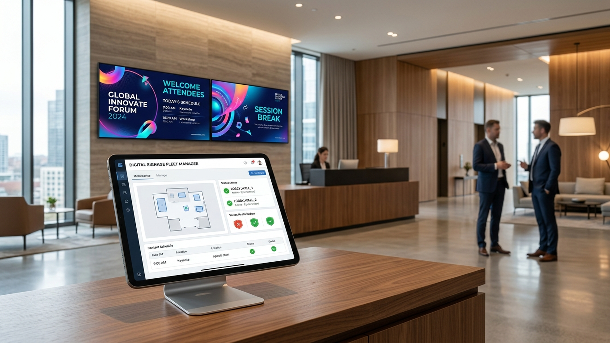

手机、平板或电脑浏览器直接上传素材、编辑场景并控制播放。
手机、平板或电脑浏览器直接上传素材、编辑场景并控制播放。
排期保存在设备本地。控制端离开后，屏幕仍可持续播放。
支持图片、视频、文字、直播、远程网页、单文件 HTML 与本地 H5 包。
电子餐牌、企业迎宾、促销倒计时和会议排期可直接编辑使用。
在同一局域网发现、配对并向多台屏幕同步素材和播放列表。
常亮、全屏、横竖屏控制、开机恢复与播放异常恢复面向长期运行设计。

在局域网内管理设备状态、内容和播放命令。没有公网控制面，也不需要额外安装桌面管理软件。
在 Android 电视、盒子或平板上打开应用。
扫描二维码或输入设备显示的六位配对码。
添加素材、字幕和播放列表，拖动调整顺序。
关闭浏览器，屏幕继续从本地稳定运行。
Local Signage 默认只在你的局域网中工作。素材、设备身份和播放配置保存在 Android 设备本地。